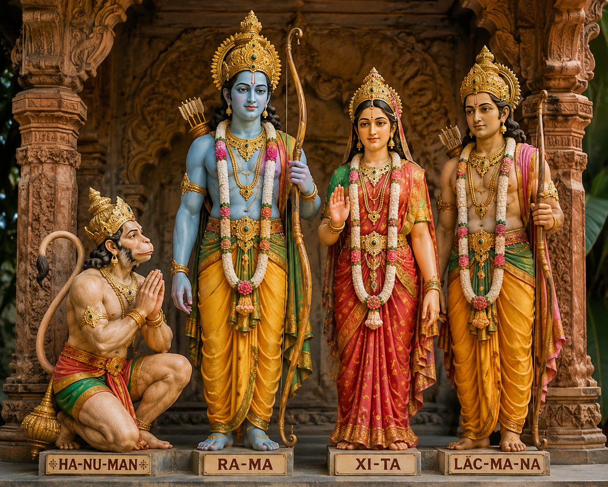

"Danh dự, phẩm giá và lòng trung thành là những giá trị cốt lõi cao quý nhất của con người trong các thiên sử thi cổ đại. Qua cuộc thử thách ngọn lửa thiêng của Xi-ta, người đọc không chỉ chứng kiến đỉnh điểm của xung đột tâm lý giữa tình yêu và danh dự dòng họ, mà còn thấy được vẻ đẹp nhân bản kiên cường của người phụ nữ Ấn Độ cổ đại."
So sánh giữa hai đoạn trích "Héc-to từ biệt Ăng-đrô-mác" (Sử thi I-li-át) và "Đăm Săn đi bắt Nữ Thần Mặt Trời" (Sử thi Đăm Săn):
| Phương diện | Héc-to từ biệt Ăng-đrô-mác | Đăm Săn đi bắt Nữ Thần Mặt Trời |
|---|---|---|
| Nhân vật | Héc-to: dũng sĩ Hy Lạp dũng cảm, coi trọng danh dự quốc gia và nghĩa vụ gia đình. | Đăm Săn: tù trưởng phi thường, khát vọng vượt qua giới hạn tự nhiên để khẳng định sức mạnh cộng đồng. |
| Cốt truyện | Cuộc chia tay cảm động giữa Héc-to và vợ con trước khi ra chiến trường sinh tử. | Hành trình gian khổ của Đăm Săn vượt qua rừng già, đầm lầy để đến nhà Nữ Thần Mặt Trời. |
| Không gian | Thành Tơ-roa cổ kính, chiến trường ác liệt, không gian mang tầm vóc chiến tranh bộ tộc. | Núi rừng Tây Nguyên hùng vĩ, không gian hoang sơ, mênh mông mang tính huyền thoại. |
| Thời gian | Thời gian lịch sử - huyền thoại gắn liền với cuộc chiến thành Tơ-roa 10 năm. | Thời gian sử thi cổ xưa, thời kỳ bộ tộc phát triển hưng thịnh. |
| Người kể chuyện | Ngôi thứ ba khách quan, tôn kính, giọng điệu trang trọng, giàu cảm xúc. | Ngôi thứ ba mang đậm phong cách hát kể (Xơ-đăng/Ê-đê), giàu so sánh trùng điệp. |
Tóm tắt nội dung chính: Nền văn minh Ấn Độ cổ đại phát triển mạnh mẽ dọc sông Hằng và sông Ấn. Tôn giáo (Bà La Môn giáo, Phật giáo) và hệ thống đẳng cấp đóng vai trò chi phối toàn bộ đời sống xã hội. Sử thi Ra-ma-ya-na thể hiện triết lý đạo đức Dharma (nghĩa vụ/bổn phận), nơi người hùng Ra-ma là biểu tượng cho đức vua hoàn hảo và Xi-ta là chuẩn mực của sự trung trinh [1].
[1] Cước chú: Theo giáo lý Ấn Độ giáo, thần Lửa A-nhi (Agni) là vị thần chứng giám cho sự trong sạch và lời thề nguyện của con người.
Chuẩn bị dàn ý thuyết trình về "Không gian văn hóa Cồng chiêng Tây Nguyên" hoặc "Lễ hội đâm trâu trong sử thi Đăm Săn", lắng nghe phản hồi của bạn học về giọng điệu và sự phong phú của tư liệu.
Nhận xét về ảnh hưởng của sử thi trong văn học Việt Nam hiện đại:
Các tác phẩm như "Bài ca chim Chơ-rao" (Thu Bồn), "Ta đi tới" (Tố Hữu), "Đất Nước" (Nguyễn Khoa Điềm) tiếp thu từ sử thi cảm hứng anh hùng cách mạng, hình ảnh thiên nhiên mênh mông vĩ đại và tinh thần đoàn kết kiên cường của toàn dân tộc.
Bối cảnh: Sau khi đánh bại quỷ vương Ra-va-na và giải cứu Xi-ta (Gia-na-ki), Ra-ma hội ngộ vợ trước sự chứng kiến của đông đảo anh em, tướng sĩ và dân chúng.
Diễn biến 1 - Lời buộc tội của Ra-ma: Ra-ma tuyên bố lý do chiến đấu là vì danh dự dòng họ và uy tín bản thân, chứ không phải chỉ vì tình cảm cá nhân. Chàng nghi ngờ sự trinh tiết của Xi-ta sau thời gian bị bắt giam ở nhà kẻ thù, dùng những lời lẽ nặng nề, xúc phạm và tuyên bố ruồng bỏ nàng.
Diễn biến 2 - Lời phân trần của Xi-ta: Xi-ta đau đớn đến nghẹn thở, khẳng định sự trong sạch và lòng trung thành. Nàng phân biệt rõ giữa thân xác (bị kẻ thù cưỡng đoạt ngoài tầm kiểm soát) và trái tim (luôn trọn vẹn hướng về Ra-ma).
Diễn biến 3 - Thử thách ngọn lửa thiêng: Để chứng minh danh dự, Xi-ta yêu cầu Lắc-ma-na dựng giàn hỏa thiêu. Nàng khấn nguyện thần Lửa A-nhi (Agni) chứng giám và dũng cảm bước vào ngọn lửa.

Hình 1: Tượng thờ các nhân vật trong sử thi Ra-ma-ya-na (Ra-ma, Xi-ta, Lắc-ma-na, Ha-nu-man)Sử thi Ra-ma-ya-na gồm 24.000 câu thơ đôi, được chia làm 7 quyển. Đây được coi là "Kinh điển sống" ảnh hưởng sâu rộng đến văn hóa, nghệ thuật múa và kiến trúc của toàn bộ khu vực Đông Nam Á (như điệu múa Ramayana ở Indonesia, sử thi Riêm-ke ở Campuchia).
Liên hệ so sánh nhân vật Xi-ta trong thử thách ngọn lửa thiêng với hình tượng người phụ nữ Việt Nam trong các tác phẩm văn học dân gian (như Vũ Thị Thiết trong Chuyện người con gái Nam Xương) để thấy sự giống nhau trong khát vọng bảo vệ danh dự.
Khi phân tích nhân vật Ra-ma, không nên nhìn nhận chàng dưới góc độ cá nhân ích kỷ hiện đại, mà phải đặt nhân vật vào bối cảnh chuẩn mực cộng đồng, danh dự của dòng họ anh hùng thời cổ đại.
Hãy trả lời 10 câu hỏi để chinh phục đỉnh cao tri thức Sử thi Ra-ma-ya-na!
Bài tập tự luận (Phân tích nghệ thuật):
Hãy phân tích nghệ thuật miêu tả tâm lý và ngôn ngữ nhân vật trong đoạn trích "Ra-ma buộc tội". Tìm 2 phép so sánh sử thi đặc sắc nhất được tác giả Van-mi-ki sử dụng.